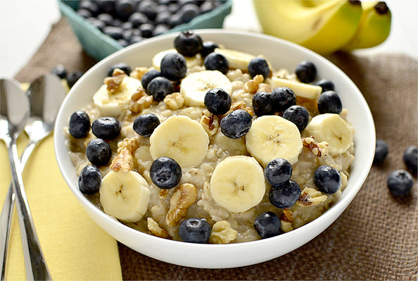

Loaded Oatmeal

Description
They say that breakfast is the most important meal of the day, and after trying this preparation of oatmeal, I most certainly agree.
Rolled oats are not only a great source of fiber and a hearty breakfast option, but they also function as a phenomenal conduit for antioxidant-rich berries!
The best part: with all of this fruit in the mix, there's no need for any added sugar! If the bananas are ripe enough, they should have plenty of sweetness to go around.
Ingredients
- Rolled Oats, roughly a cup
- Frozen Blueberries and/or Blackberries, 1/2 cup
- A Banana, cut into thin slices
- Flax Seeds, 2 tablespoons
- Soymilk, to taste
- Cinnamon, to taste
- Kosher Salt, to taste
Instructions
- Add rolled oats, salt, and frozen berries to a wide bowl.
- Prepare the rolled oats according to package instructions.
- Sprinkle flax seeds evenly onto the oatmeal.
- Toss on the sliced banana, as well as the soymilk.
- Add a pinch of cinnamon on top.
Back to Recipes